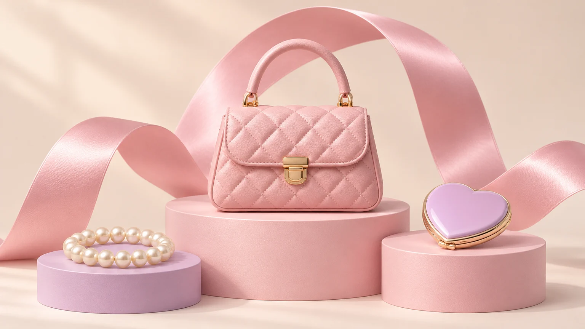
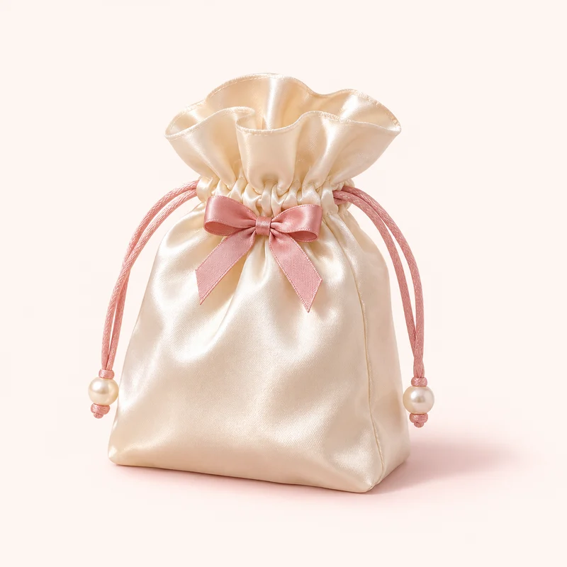

برای تو، با یک عالمه عشق
یه دنیا
قشنگی،
برای تو.
از یه پاپیون کوچولو تا کیفِ موردعلاقهات؛
اینجا جزئیات کوچیک، روزت رو قشنگتر میکنن.

THE LITTLE JOYS CLUBکوچیک، ولی دلبر! روی اسم هر کوچولو بزن تا از نزدیک ببینیشهر کدوم، یه جور دل میبرن
دنیای تو، به سلیقهٔ تو.
فصلِ دوست داشتنِ خودت
کوچولوهای دلبَر.
چیزهایی که دیدنشون
یه لبخند کوچولو میاره.
اینجا هنوز یه کم خلوت است!
یه کلمهٔ دیگه امتحان کن یا همهٔ قشنگیها رو ببین.

just a littlesomething ♡
بهانه نمیخواد، یه دلِ مهربون میخواد
یه روبان ببند،
یه دل رو خوشحال کن.
برای رفیقت، خواهرت، یا خودِ دوستداشتنیات.
یه یادگاری کوچیک، با یه عالمه حس خوب.
خیالت راحت، قشنگِ من
قبل از انتخاب،
اینها رو بدون.
چطور محصول مناسبم رو انتخاب کنم؟ +
روی هر محصول بزن تا جنس، اندازه و روش نگهداریاش رو ببینی. با قلب کنار محصول هم میتونی انتخابهات رو برای بعد نگه داری.
چیزهایی که دوست دارم کجا میمونن؟ +
علاقهمندیها و سبد خرید در همین مرورگر میمونن؛ حتی اگر صفحه رو ببندی. با پاک کردن دادههای مرورگر، این فهرستها هم پاک میشن.
چطور از اکسسوریهام نگهداری کنم؟ +
زیورآلات رو از آب و عطر دور نگه دار و پارچههای ساتن رو با دست و آب سرد بشور. راهنمای دقیقتر هر کوچولو، کنار توضیحات همون محصوله.
میتونم انتخابهام رو با هم مقایسه کنم؟ +
قلب محصولاتی که دوست داری رو بزن و بعد «علاقهمندیها» رو باز کن؛ همهٔ انتخابهات کنار هم دیده میشن و راحتتر میتونی تصمیم بگیری.
گاهی یه چیز کوچیک،
همهچیز رو قشنگتر میکنه.